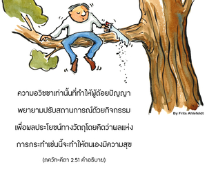
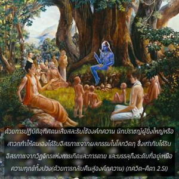

ทำให้มหาสมุทรแห่งโลกวัตถุกลายมาเป็นน้ำที่อยู่ในรอยเท้าของลูกวัว พะรัม พะดัม คือสถานที่ที่ไม่มีความทุกข์ทางวัตถุ หรือ ไวคุณธะ ซึ่งเป็นจุดมุ่งหมาย ไม่ใช่สถานที่ที่มีภยันตรายอยู่ทุกฝีก้าวในชีวิต” (ชรีมัด-ภควธัม 10.14.58)")

ด้วยการปฏิบัติอุทิศตนเสียสละรับใช้องค์ภควานฺ นักปราชญ์ผู้ยิ่งใหญ่หรือสาวกนั้นทำให้ตนเองได้รับอิสรภาพจากผลกรรมในโลกวัตถุ ซึ่งเท่ากับได้รับอิสรภาพจากวัฏจักรแห่งการเกิดและการตาย และบรรลุถึงระดับที่อยู่เหนือความทุกข์ทั้งปวง (ด้วยการกลับคืนสู่องค์ภควานฺ)


สิ่งมีชีวิตผู้หลุดพ้นอยู่ ณ สถานที่ที่ไม่มีความทุกข์ทางวัตถุ ภาควต (10.14.58) กล่าวว่า
สมาษฺริตา เย ปท-ปลฺลว-ปฺลวํ
มหตฺ-ปทํ ปุณฺย-ยโศ มุราเรห์
ภวามฺพุธิรฺ วตฺส-ปทํ ปรํ ปทํ
ปทํ ปทํ ยทฺ วิปทำ น เตษามฺ
“สำหรับผู้ที่ยอมรับเอาพระบาทรูปดอกบัวขององค์ภควานฺมาเป็นนาวา องค์ภควานฺผู้ทรงเป็นที่พึ่งของสรรพสิ่งที่ปรากฏอยู่ในจักรวาล ทรงมีชื่อเสียงในพระนาม มุกุนฺท หรือผู้ให้ มุกฺติ (ความหลุดพ้น) ทำให้มหาสมุทรแห่งโลกวัตถุกลายมาเป็นน้ำที่อยู่ในรอยเท้าของลูกวัว ปรํ ปทมฺ คือ สถานที่ที่ไม่มีความทุกข์ทางวัตถุ หรือ ไวกุณฺฐ ซึ่งเป็นจุดมุ่งหมาย ไม่ใช่สถานที่ที่มีภยันตรายอยู่ทุกฝีก้าวในชีวิต”
เนื่องด้วยอวิชชาทำให้เราไม่รู้ว่าโลกวัตถุนี้เป็นสถานที่ที่มีความทุกข์และมีภยันตรายอยู่ทุกฝีก้าว ความอวิชชาเท่านั้นที่ทำให้ผู้ด้อยปัญญาพยายามปรับสถานการณ์ด้วยกิจกรรมเพื่อผลประโยชน์ทางวัตถุ โดยคิดว่าผลแห่งการกระทำเช่นนี้จะทำให้ตนเองมีความสุข โดยไม่รู้ว่าไม่มีร่างกายวัตถุชนิดใด ไม่ว่าจะอยู่ที่ไหนภายในจักรวาลวัตถุนี้จะสามารถมีชีวิตอยู่ได้โดยไม่มีความทุกข์ ความทุกข์ในชีวิต เช่น การเกิด การตาย ความแก่ และโรคภัยต่างๆ มีอยู่ทุกหนทุกแห่งภายในโลกวัตถุ แต่ผู้ที่เข้าใจสถานภาพพื้นฐานอันแท้จริงของตนเองว่าเป็นผู้รับใช้นิรันดรขององค์ภควานฺ และทราบถึงสถานภาพของบุคลิกภาพแห่งองค์ภควานฺจะปฏิบัติตนรับใช้พระองค์ด้วยความรักทิพย์ หลังจากนั้นเราจะเป็นผู้มีคุณวุฒิที่จะเข้าไปในโลก ไวกุณฺฐ สถานที่ที่ทุกชีวิตไม่มีความทุกข์ทางวัตถุ และไม่มีอิทธิพลของเวลาและความตาย การทราบถึงสถานภาพพื้นฐานของตัวเรา หมายถึง การทราบสถานภาพอันประเสริฐขององค์ภควานฺเช่นกัน ผู้ที่คิดผิดๆ ว่าสถานภาพของสิ่งมีชีวิตและสถานภาพขององค์ภควานฺอยู่ในระดับเดียวกัน ผู้นั้นอยู่ในความมืดมนอย่างแน่นอน ดังนั้น เขาจะไม่สามารถปฏิบัติการอุทิศตนเสียสละรับใช้แด่องค์ภควานฺได้ แต่จะพยายามเป็นองค์ภควานฺเสียเอง ซึ่งเป็นการปูทางเพื่อวัฏจักรแห่งการเกิดและการตาย ผู้ที่เข้าใจว่าสถานภาพของตนคือผู้รับใช้ และหันมารับใช้องค์ภควานฺเขาจะมีสิทธิ์เข้าไปสู่ ไวกุณฺฐ-โลกทันที การรับใช้องค์ภควานฺ เรียกว่า กรฺม-โยค หรือ พุทฺธิ-โยค หรือในคำพูดง่ายๆ คือการอุทิศตนเสียสละรับใช้แด่องค์ภควานฺ